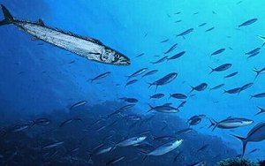

Mark Allinson
Fish-Wish
To be a Couta, fired with icy blood,
a bullet-snout torpedo at a shoal
of mackerel, or at a school of cod,
and after blood and flesh, to have no goal.
And never have to argue with a soul,
yet be alive to sex, though never touch:
enough to make me wish away my role
of being human, prone to care, too much
whirred by gears of hopes that grind and clutch.
Sure there’s fear in sighting a shiver of shark
or dodging a lunge of moray eel and such,
but the blind thrill of drilling into the dark
of ocean night toward a watery dawn —
how wonderful! — just feed and fly and spawn.

Recall
Do you recall that day
when I tried, in the city square,
so hard to find a way
to make you understand?
I reached to touch your hand,
whispering near your hair;
you let no feeling show
through the twists of your wedding band.
The explosion of your “No!”
blew doves to darkened air.
Mark Allinson is a semi-retired academic, now living on the south coast of NSW.
|